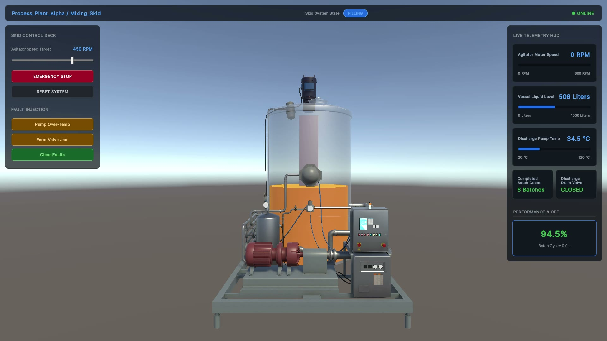

1. Lifecycle Management
Alarms are tracked through standard lifecycle states (e.g., Unacknowledged, Acknowledged) so operators have clear visibility into active issues that need attention.
Live Modbus TCP and OPC UA telemetry, normalized by a Python UNS bridge, driving a real-time Unity 6 mixing skid with optimized fluid shaders and a modular UI Toolkit SCADA HUD.
What this means for engineering & operations
End-to-end run in Unity 6: live telemetry from the Python PLC bridge drives procedural fluid dynamics, HUD widgets, and a remote emergency shutdown.
Select an operating state to inspect the visual twin capture and its live telemetry parameters.

Field protocols are isolated behind an asynchronous Python edge broker that normalizes every signal into one semantic stream for the Unity twin.
50–100 ms polling for motor RPM, batch count, fill/drain valves, and fault registers.
Report-by-exception subscriptions for vessel levels and motor temperatures.
Semantic topic paths, engineering units, alarm priority and suppression.
JSON telemetry frames plus a dynamic metadata handshake.
In-memory plant snapshot; tag registries built from handshake metadata.
60+ FPS lerp smoothing and MaterialPropertyBlock shader driving.
Metric cards, OEE gauges, alarm deck, and remote control deck.
Hardcoded register addresses (40001, ns=2;s=Mixer.AgitatorRPM) break every client when a PLC is rewired, and naive thresholds flood operators with alarms. The bridge maps registers into a
Unified Namespace (UNS) & ISA-95
An industrial architecture standard where all plant telemetry is organized into an open, semantic topic hierarchy (Enterprise → Site → Area → Line → Asset). Downstream systems subscribe to context-rich topics without depending on physical PLC memory addresses.
In Line DT: Decouples the 3D twin from PLC hardware, allowing hardware swaps without breaking visual bindings.
hierarchy and runs an
ANSI/ISA-18.2 Alarm Standard
The global industrial benchmark for alarm management. Replaces simple threshold triggers with formal lifecycle states (Normal, Unacknowledged, Acknowledged, Suppressed) and requires context-aware filtering to prevent operator panic during plant upsets.
In Line DT: Suppresses false alarms (e.g. low-speed alarm during intentional machine stop).
alarm engine, so the twin subscribes to meaningful topics and operators see prioritized alerts.
Clients hardcode raw memory registers. Any sensor rewire, address shift, or vendor swap breaks the 3D scene and forces a Unity rebuild.
The bridge maps registers to semantic paths. Unity discovers tags, units, and ranges dynamically via the METADATA_HANDSHAKE.
Alarms are tracked through standard lifecycle states (e.g., Unacknowledged, Acknowledged) so operators have clear visibility into active issues that need attention.
The system prevents nuisance alerts by factoring in operational context, ensuring alarms are only raised when equipment is actually running unexpectedly out of bounds.
Alerts are organized by severity (Critical, Warning, Info), driving both the UI indicators and the 3D stacklight to guide immediate operator focus.
Network packets arrive at 50–100 ms intervals while the twin renders at 60+ FPS. To prevent stutter and memory allocations, we decoupled ingestion and rendering, pairing it with a responsive, modular UI Toolkit HUD.
Immediate WebSockets updates without blocking render loop.
Continuous 60+ FPS interpolation regardless of jitter.
MaterialPropertyBlock for zero-allocation batching.
Aggregates fragmented OT data into a unified stream.
Formats units, shows quality, and applies ISA badges.
Live OEE tracking: Availability, Performance, Quality.
ISA-18.2 compliant priority-sorted alarm roster.
Bidirectional supervisory actions sent back via WebSockets.
Click or hover any module to highlight & inspect
Explore the Universal Field Bridge architecture, SQLite edge buffering, and Siemens S7 adapters.